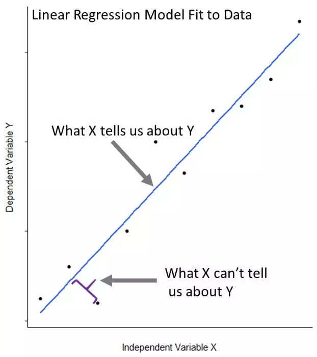
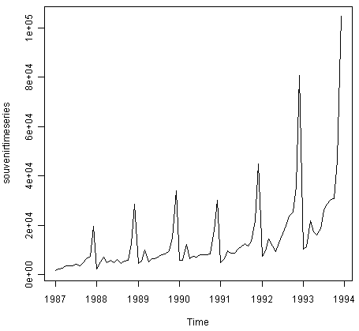

1 Assignment 1
About Mengü and Data Analytics
1.1 Who am I?
I studied mainly math&science in high school. Also I wanted to be a businessman. I believed in that this could happen by study business. Therefore, I choose to study International Trade&Management at Yeditepe University as a full scholarship student in 2014. This is one of my big mistakes. I completed an amazing english prep-school in my first year of university. However, I was disappointed after completed one year in the faculty because of the course contents. To continue my letter, I should say that I see Steve Jobs as my role model. After disappointment, I decided to educate myself based on my interests like Steve Jobs. This is one of my good decisions. I attended to other faculties’ lessons like, calculus, algebra, data structures as a guest student. Also, I used open sources to read, listen and learn about global trends. A lot of articles, business professionals pointed out big data, data analytics, machine learning and AI. I aimed to learn more things about these disciplines. In addition to my theoretic works, I worked for Shell Turkey and Dünya Varlık as a long term intern for 1.5 years in total. All of lessons, internship experiments and learnings added vision to me, also added one semester to my university life. After a short delay, I graduated from university in July 2020. My work journey started with Shell Turkey in 2018 as an Intern. My project was collecting data from Investment models and creating a readable and writeable a data lake with collected data. Thanks to this project, I learnt data literacy principles. After completed my project, I started to work for Dünya Varlık as a Intern and promoted to part-time Treasury Analyst in 2019. In my Internship, I observed treasury operations, cash-flow models. In my treasury analyst period, I built a Excel, VBA based mini ERP system for treasury operations with treasury director. Also, I develop cash flow model. My ERP and modeling project was very appreciated so, I was promoted to the junior data analyst in analytics team by CEO. In my junior period, I had chance to learn SQL. After graduation I started to work full time and built data driven collection strategies. Last in Dünya Varlık, I completed a project that aimed to predict who, when and how much pays in 10 years as a head analyst. The project sponsored by CEO and Experian was consultant company. After completed project, I decided to work for a global company. Therefore I changed my work and I have been working for ING Turkey since march 2022. I am responsible for collection strategies development and implementation. You can easily reach my LinkedIn page in this link.
In my special life, I am a Sudoku hunter. I believe in cause and effect which is represented by Sudoku
1.2 Forecasting Nowcasting
You can easily watch video in this link
1.3 R Posts
1.3.1 What is R Analytics?
R analytics is data analytics using R programming language, an open-source language used for statistical computing or graphics. This programming language is often used in statistical analysis and data mining. It can be used for analytics to identify patterns and build practical models. R not only can help analyze organizations’ data, but also be used to help in the creation and development of software applications that perform statistical analysis.
While R programming was originally designed for statisticians, it can be implemented for a variety of uses including predictive analytics, data modeling, and data mining. Businesses can implement R to create custom models for data collection, clustering, and analytics. R analytics can provide a valuable way to quickly develop models targeted at understanding specific areas of the business and delivering tailored insights on day-to-day needs.
R analytics can be used for the following purposes:
Statistical testing, Prescriptive analytics, Predictive analytics, Time-series analysis, What-if analysis, Regression models, Data exploration, Forecasting, Text mining, Data mining, Visual analytics, Web analytics, Social media analytics, Sentiment analysis
Source : What is R Analytics
1.3.2 Using Linear Regression for Predictive Modeling in R
n R programming, predictive models are extremely useful for forecasting future outcomes and estimating metrics that are impractical to measure. For example, data scientists could use predictive models to forecast crop yields based on rainfall and temperature, or to determine whether patients with certain traits are more likely to react badly to a new medication.
Before we talk about linear regression specifically, let’s remind ourselves what a typical data science workflow might look like. A lot of the time, we’ll start with a question we want to answer, and do something like the following:
Collect some data relevant to the problem (more is almost always better). Clean, augment, and preprocess the data into a convenient form, if needed. Conduct an exploratory analysis of the data to get a better sense of it. Using what you find as a guide, construct a model of some aspect of the data. Use the model to answer the question you started with, and validate your results.

Source : Using Linear Regression for Predictive Modeling in R
1.3.3 Using R for Time Series Analysis
This booklet itells you how to use the R statistical software to carry out some simple analyses that are common in analysing time series data.
This booklet assumes that the reader has some basic knowledge of time series analysis, and the principal focus of the booklet is not to explain time series analysis, but rather to explain how to carry out these analyses using R.

Source : Using R for Time Series Analysis